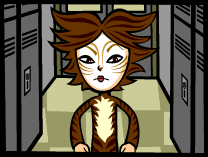
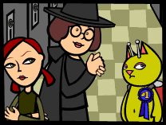
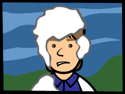

This morning started out like most of the mornings I have experienced
on Earth thus far. I woke, cleaned myself, and then made my way to the
breakfast nook. Along the way I passed June, who was stumbling her way
to the bathroom. Her face turned paler than usual when she saw me. She
tried to articulate something, but it came out as an unintelligible grunt.
I figured she was tired. I heard her late last night, pounding on the
computer keyboard in her room. I wonder what she's writing about all the
time.
When I entered the kitchen Mrs. LeBore let out a piercing shriek. "OH
MY GAWD!" she exclaimed, "That is the best costume I've ever seen!"
That is when I realized that my Hypno-Façade was not functioning.
"Howard, look at Katerina! How adorable!! What are you supposed to be,
dear? A green cat? Oh! How original! OH! And look! She's got antennas!
Fabulous!"
Mr. LeBore smiled at me and went back to reading the Science section of
the New York Times.
I excused myself (with out getting any bacon, I might add) and went back
to my room. I tried to reboot the Hypno-Façade, to no avail. I
then sent an emergency requisition to the KSA for a new Hypno-Façade
chip.

When I got back to the kitchen June was there. She eyed me suspiciously
as her mother droned on and on about my clever "costume."
"Doesn't Katerina look fantastic June? You should have gotten dressed
up today. You used to come up with the most creative Halloween costumes!
What were you the last time you dressed up? The leafy bush? You looked
so cute!"
"I wasn't a leafy bush, I was the grassy knoll. And I got creamed
that year. It took me weeks to get the eggshells out of my hair. Never
again." She glanced at me with disdain.
My appearance got mixed reactions at school. Most of the teachers praised
my creativity, but I could sense an undercurrent of hostility emanating
from some of the students. I get the feeling that dressing up for Halloween
is behavior that is shunned once you reach High School age. There was
one student, however, who was both in a costume and who also resented
my appearance. That student was Courtney.
I overheard her talking to a select group pretty girls as she opened her
locker.
"Wow Courtney! What a great costume! Where did you get it?" asked the
blonde cheerleader who is dating Todd, June's bus tormenter. She was wearing
her cheerleader outfit, which doesn't really count as a costume, since
she wears it at least every other day.
"After
Cats left Broadway they auctioned off costumes and props on the
Internet. My daddy bought me Bombalurina's costume, since she was always
my favorite Jellical cat."
"You're totally going to win the costume contest Courtney!"
"Oh, I don't know. I mean, I haven't seen any costumes better than mine
yet, but it's still early in the d--"
Courtney's mouth dropped open when she saw me. She then squinted and her
mouth shriveled up to the size of a small, withered prune. I got the distinct
feeling that I was treading on her territory. The only thing she was missing
was a puffed up tail. I ducked into my homeroom and tried to be inconspicuous.
My efforts were quite in vain. Everyone wanted to know what I was supposed
to be and where I got my "costume" from. I can only thank the Katatonian
Elders that these humans are so incredibly dim-witted.
I was in for an unsettling surprise during lunch. I was not aware that
humans give out prizes for "Best Costume" on Halloween. Despite my anxiety
about being exposed as an outsider, I felt that to resist the humans'
desire to single out an individual to set on a pedestal would exacerbate
my predicament.
The public address system crackled and the tinny voice of Principal Warner
filled the room, which immediately became silent.
"Attention Students! I am pleased to announce the winner of this year's
Spooktacular Halloween Costume Contest!" One could hear paper rustling
in the background. "The winner is our very own exchange student, Katerina
Bottynski who is dressed as..." Here principal Warner paused, then continued
in a muffled voice, "What is she supposed to be?" There was more rusting
paper. "Katerina is dressed as a green cat, with antennas! An alien feline,
if you will. Please congratulate our winner!"
Several people clapped. June kept boring holes in my skull with her sullen
gaze and Courtney looked extremely displeased. I was never so glad to
hear a school bell ring in my entire life.
Later
in the day, I was presented with a blue ribbon which proclaimed that I
was "#1." How utterly charming. Mrs. Marr, who pinned the ribbon on
to my chest, babbled on and on about how creative I was and how proud
she was to see school spirit in one who is so new to Hicksville High and
also to America. Mrs. Marr was dressed as a witch, which I am sure some
students might find extremely apropos. June waited and rolled her eyes.
After Mrs.
Marr wandered back to the teachers' lounge, June said, "Are you happy
now? We missed the damn bus." She then spun around and walked out of the
school. I followed.
On our way home, we passed hoards of children dressed up as Power Puff
girls and Pokemon characters. Most of the packs were accompanied by adults
who shook their heads when the saw me. The children just giggled into
their chocolate stained hands.
As we rounded the corner of Elm Street, a group of boys appeared around
the opposite corner. They were covered from head to toe with white foam.
I did not think this boded very well for us, and neither did June who
said, "Shit."
I didn't know what the boys were up to, but I could sense high levels
of animosity emanating from them. The leader spoke.
"Well,
if it isn't the freak and her Russian side kick."
Judging by his voice, the leader was Todd.
"Courtney said you'd be walking home today. It's a really bad day to miss
the bus."
"What's your problem, Todd? You sick of beating up on middle school kids?
You got to attack unarmed girls now?" June said.
"Oh, sure," replied Todd. "This is going to be real fun."
His band of accomplices snickered and shook their shaving cream cans.
They walked towards us. June looked around for somewhere to hide. As the
boys got closer I reached back and pulled the mini incendiary extinguisher
off my jetpack. All it took was one shot. The boys were knocked back fifty
feet by the force of the dry extinguisher device. The shaving cream cans
exploded and Todd screamed like a little girl.
"I'm going to kill you!"
June grabbed my hand and shouted, "Run!"
She did not have to tell me that.
We ran, and we did not stop until we reached home.
My replacement Hypno-Façade chip was waiting for me when I reached
the safety of Junior LeBore's room. Now that was a grand treat.